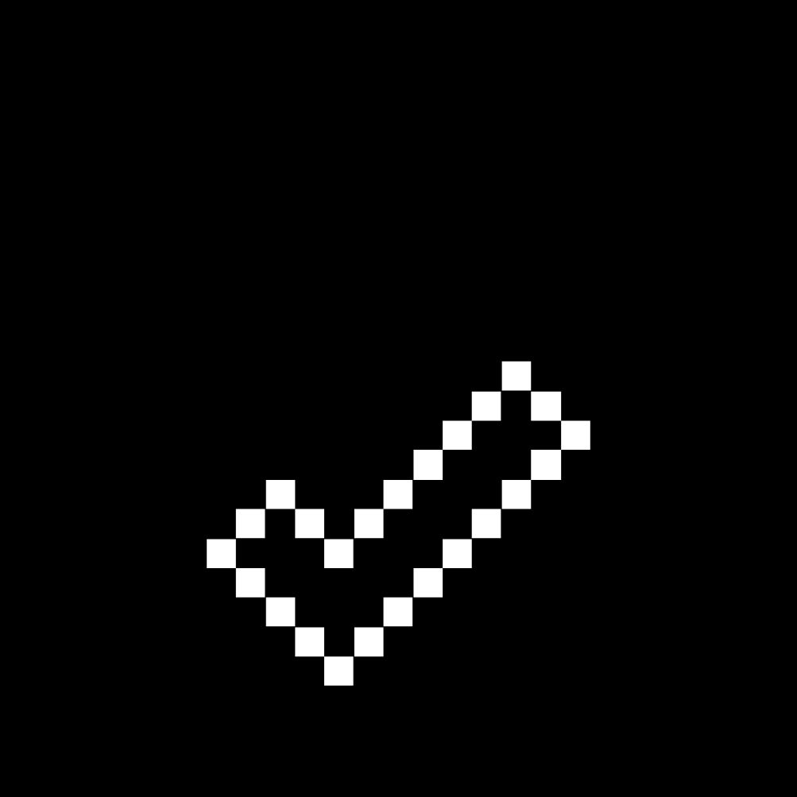

Critérios de avaliação
A disciplina contará com um Projeto Final (a ser desenvolvido em grupo), dividido em três entregas parciais ao longo do semestre, e uma série de exercícios práticos de fixação (a serem desenvolvidos individualmente). Tais atividades serão utilizadas para avaliar a aprendizagem do aluno. Particularmente no caso do Projeto Final, as notas individuais de cada aluno serão atribuídas conforme sua contribuição em cada etapa.